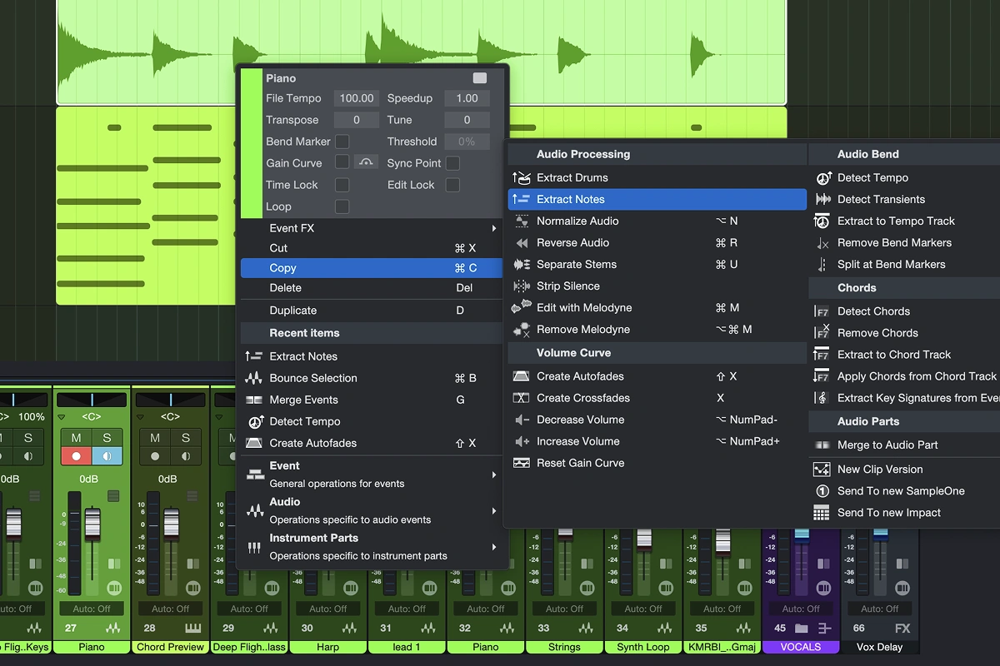

Личная консультация
В формате стрима
Я показываю экран и звук прямо из своего проекта: вы видите, как всё устроено, и слышите результат в реальном времени.
- Вопросы по музыке, аранжировке и сведению
- Вопросы по работе в DAW
- Разбираем на живом проекте
Рабочие приёмы и настройки в DAW. От базовых действий до готовой песни.

В формате стрима
Я показываю экран и звук прямо из своего проекта: вы видите, как всё устроено, и слышите результат в реальном времени.
Работаем вместе в течение месяца.
Скоро
Пошаговый курс: от первого проекта до готовой песни.
Готовые шаблоны проектов, чтобы быстрее начать работу.
Записать голос дома так, чтобы его можно было свести, получается не у каждого. Я помогаю с этим.
Напишите в Telegram: расскажу про консультации и сообщу, когда выйдет курс.